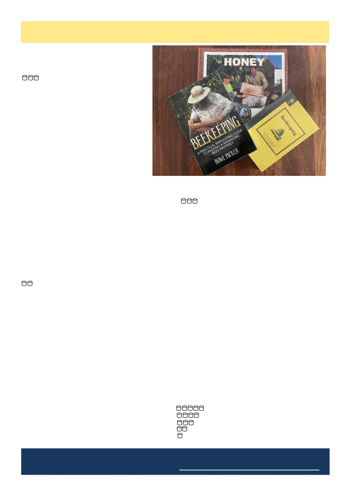

18
Australian Bee Journal
Book Reviews
Deadline for the next journal is Tuesday 1st of September 2026
Please send any submissions to abjeditor@vicbeekeepers.com.au
By Gill Greenstein
Beekeeping – National Trust Read.
Author - Andrew Davis.
Good library borrow.
This is a lovely little bedtime read - short, con-
cise, and packed with practical tips for keeping
bees in the UK. It provides a straightforward
overview of the beekeeping year, making it an
easy book to pick up and enjoy over a few eve-
nings.
Most of the advice is general enough to ap-
ply wherever you keep bees, although the tim-
ing reflects the Northern Hemisphere. It's in-
teresting to compare their beekeeping calendar
with our own here in Australia.
I found it an enjoyable read. It's ideal for
new beekeepers looking for a solid introduc-
tion, or for more experienced beekeepers wanting to fill
in a few knowledge gaps.
I'd happily recommend it, and I'll leave you with a
quote from Andrew Davies that I think every beekeeper
can relate to:
"The joy of keeping bees is that they never fail to
surprise you."
And isn't that the truth? Every time we think we've
worked them out, they remind us who's really in
charge!
Beekeeping
A practical guide to keeping and managing bees
properly
Bowe Packer
Only if you're particularly interested.
This book is a self-published book that's clearly
been written as a real labour of love. You can tell the
author is passionate about bees.
The content is definitely from a US perspective - I'd
put money on California - so some of the advice doesn't
quite line up with what we do here in Australia.
The book buzzes through all the classic beekeeping
topics: hive management, inspections, equipment, and
so on. The problem is, it only gives each one a quick
visit before flying off to the next. I found myself think-
ing, "Hang on... tell me more!"
Personally, this one didn't really land with me. I like
books that dig a little deeper and explain the reasons
behind the methods, rather than just skimming over
them.
That said, not every book has to become your fa-
vourite hive tool. If you're curious about how beekeep-
ing is approached in the US, or you're just looking for
an easy, relaxed read, it's worth borrowing.
Would I rush out and buy it? Probably not.
Would I read it if someone handed me a copy? Ab-
solutely - because you can always pick up a nugget or
two from another beekeeper's experience.
The Work Book series – Honey
Author: Catriona Nicholls
Illustrated: Rod Waller
Good library borrow.
Now, I absolutely loved this book. Maybe it's my inner
child escaping, but from the first few pages I was
hooked.
Don't let the fact that it's aimed at younger readers
fool you. It's packed with fascinating facts and follows
the journey of honey from bee to breakfast table in a
fun, easy-to-read way.
I reckon every beekeeper with grandchildren - or
anyone trying to tempt the next generation into bee-
keeping - should have a copy on the shelf. Better still,
sit down and read it together. You might be surprised
by what you learn yourself.
Did you know how many eggs a queen can lay every
second? Or how many times you can be stung through
your protective gear before it becomes a really bad day?
(You'll have to read the book for the answers!)
I found myself thinking, "I knew that... well... most
of it."
So yes, I'd happily recommend this book. It's per-
fect for families, budding young beekeepers, anyone
who's young at heart, or even those of us who've been
keeping bees for decades and still enjoy learning a new
fact or two.
After all, if bees can keep teaching us something
new every season, there's no reason a children's book
can't do the same.
Enjoy!
Honey Pot Rating:
Outstanding – Every beekeeper should read it.
Worth owning.
Good library borrow.
Only if you're particularly interested.
Save your honey money!